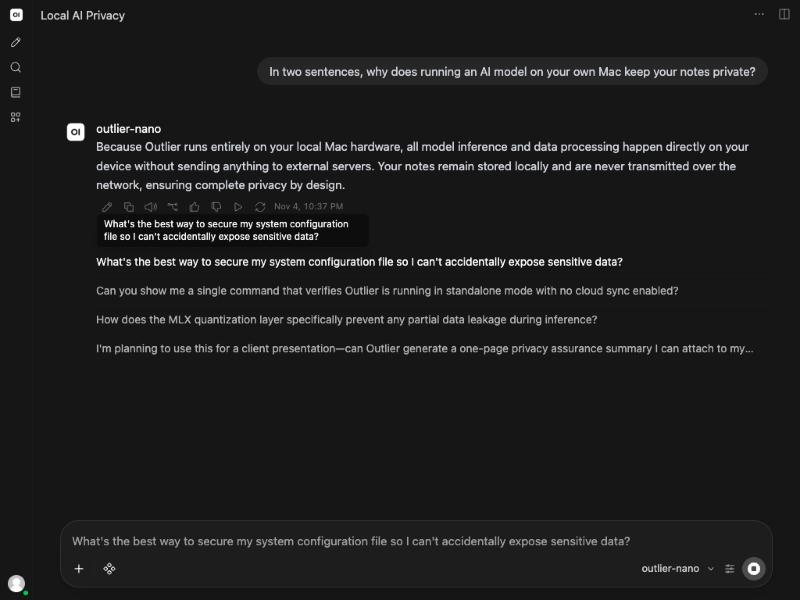

Use Open WebUI with Outlier on your Mac
- Yes, Open WebUI works with Outlier. It talks to Outlier's OpenAI-compatible API at
http://127.0.0.1:8766/v1, and Outlier's models show up in its model picker. - Turn the API on in Outlier (Settings → Advanced → Developer; it is part of Pro), then start Open WebUI on your Mac with that address and your Outlier key.
- Run Open WebUI on the Mac itself, not in Docker: Outlier only answers requests addressed to this Mac.
- Open WebUI is the window; Outlier runs the model on your Mac.
Outlier Pro: $49 once · Black Friday price, all of November: $24.50 once, until 30 November
Free to start (Nano and Lite). macOS 15+, Apple silicon. Refund window: 30 days, no questions asked.
What we ran
On 2026-11-05, on an M1 Ultra Mac, we started Open WebUI 0.13.0 pointed at Outlier 1.11.994. It read Outlier's model list
(outlier-nano, outlier-lite, outlier-quick, outlier-compact and outlier-vision38), and outlier-nano answered a question
in its chat. Outlier's own log shows the requests from Open WebUI: GET /v1/models and
POST /v1/chat/completions, every one from 127.0.0.1 and every one answered 200.

Set it up
- Turn on Outlier's API. In Outlier: Settings → Advanced → Developer → OpenAI-compatible API. Flip the toggle and copy the API key.
- Install Open WebUI in its own Python environment. It needs Python 3.11 or 3.12. With its dependencies it took 2.3 GB here.
python3.11 -m venv ~/open-webui ~/open-webui/bin/pip install open-webui - Start it from that folder, pointed at Outlier. Open WebUI writes a
.webui_secret_keyfile into whichever folder you start it from, so start it from its own.cd ~/open-webui OPENAI_API_BASE_URL=http://127.0.0.1:8766/v1 \ OPENAI_API_KEY=your-outlier-key \ ENABLE_OLLAMA_API=False \ ~/open-webui/bin/open-webui serve --host 127.0.0.1 --port 8080 - Open
http://127.0.0.1:8080, pick a model and chat. outlier-nano is the fastest; outlier-compact is Core, the strongest model that fits most Macs.
Things worth knowing
- Not in Docker. Outlier answers only requests addressed to this Mac (127.0.0.1 or localhost). A container reaches it as
host.docker.internal, which it refuses. Install Open WebUI with pip, as above. - A login, or none. If you are the only person using it, add
WEBUI_AUTH=Falseto the start command and Open WebUI skips its login screen. That is how we ran it. - A few extra requests. Besides your answer, Open WebUI asks the model for a chat title and some follow-up suggestions. They run on your Mac too, and show up in Outlier's log as extra completions.
- Text only. Outlier's
/v1endpoint takes text. To ask about a picture, use Outlier's own window, where Vision 3.8 reads images.
Common questions
Does Open WebUI send my chats anywhere?
Not in this setup. Your chat goes from Open WebUI to Outlier on 127.0.0.1, and Outlier runs the model on your Mac. Open WebUI can make network calls of its own, such as update checks and model downloads; we ran it with OFFLINE_MODE=True and its update check off, which stops those.
Which Outlier models can I pick in Open WebUI?
The ones Outlier lists at /v1/models: outlier-nano, outlier-lite, outlier-quick, outlier-compact (Core) and outlier-vision38, as far as they are downloaded on your Mac.
Does this work on Outlier's free plan?
No. The OpenAI-compatible API is part of Pro; on the free plan a request to it comes back 402 feature_locked.
The API itself, with code for the OpenAI SDK, is on Outlier's developer page, and the general steps are in how to run a local OpenAI-compatible API on your Mac. More guides are in how-to.
Outlier Pro: $49 once · Black Friday price, all of November: $24.50 once, until 30 November
Free to start (Nano and Lite). macOS 15+, Apple silicon. Refund window: 30 days, no questions asked.